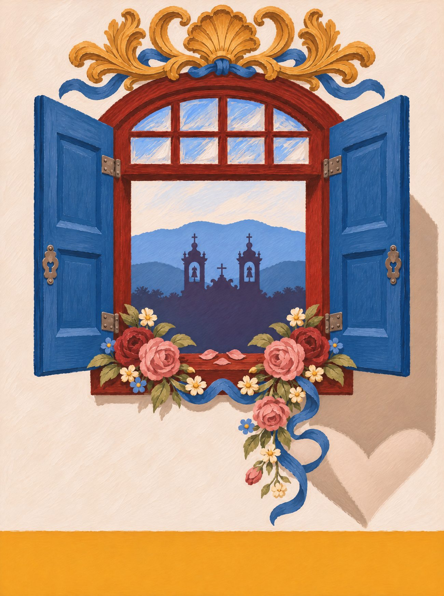
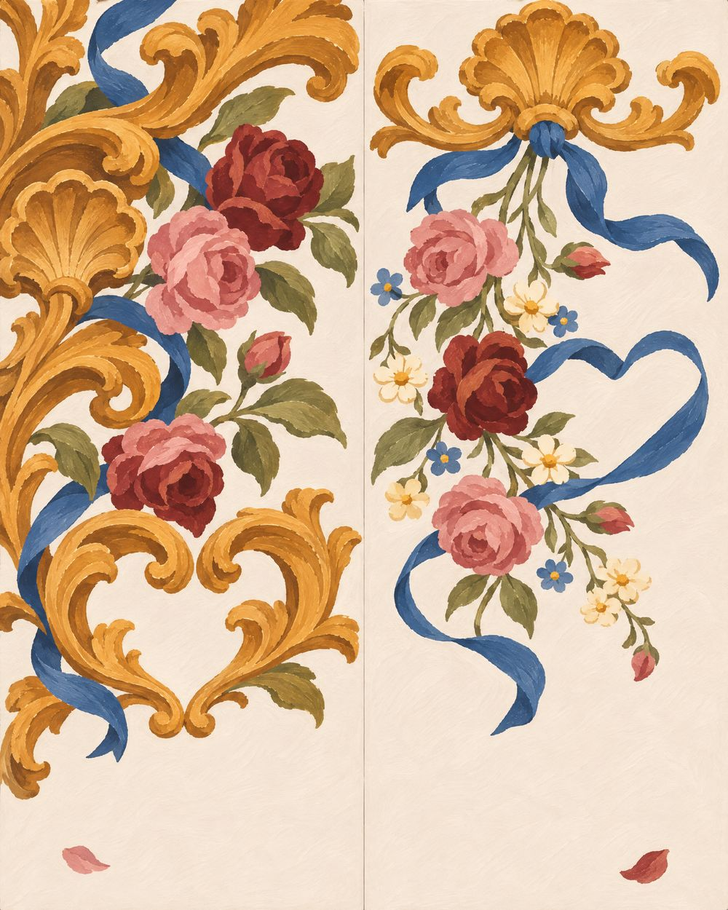
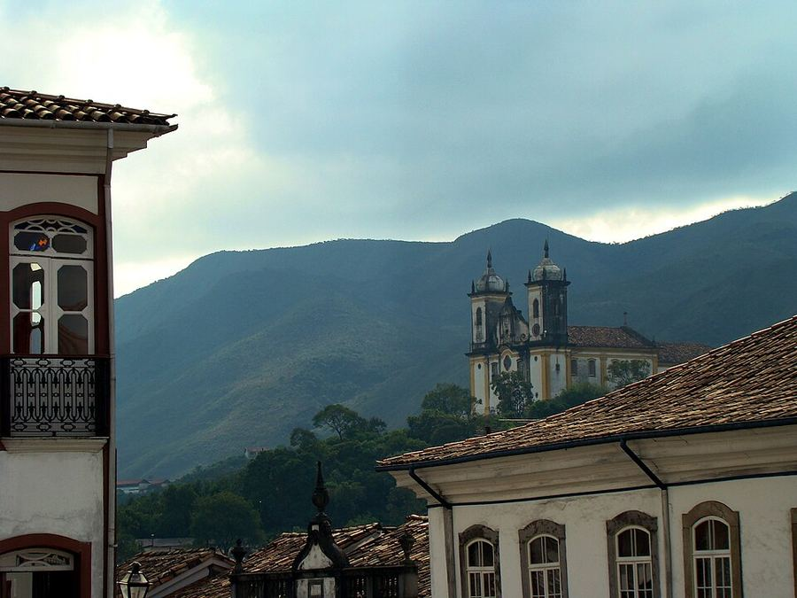
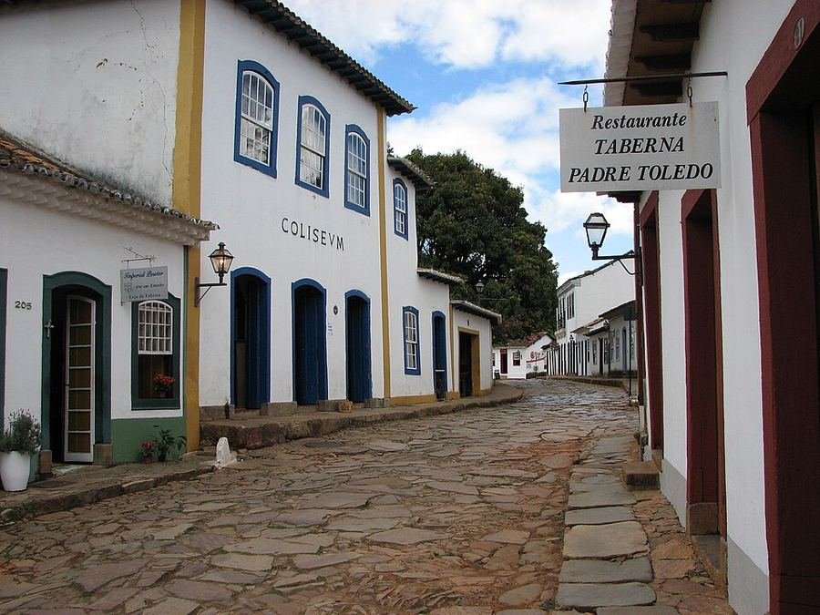
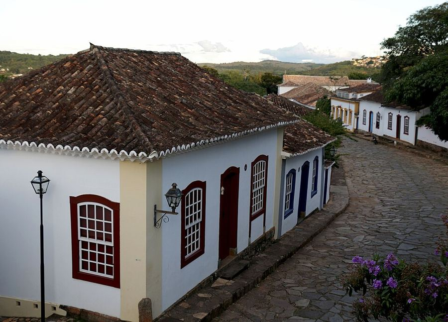

Minas Gerais
Barroco de Minas
O ouro das igrejas de Ouro Preto, mas visto de perto: a talha que sobe pelos altares e as rosas que o Mestre Ataíde pintou no forro da São Francisco de Assis.
01 / 14 · Sudeste


o coração
Encontre o coração
Ele não está desenhado em cima de nada. Aparece quando os próprios elementos da cena se encontram. Procure na ilustração e toque nele.
♥ a sombra da veneziana aberta na parede caiada


o par
Dois pés, uma história
na palmilha
pé esquerdo com a talha dourada de volutas e concha; pé direito com a guirlanda de rosas e a fita azul-colonial.
borracha e tira
branco-caiado das igrejas mineiras; tira azul-colonial.
a arte da palmilha

caderno de campo
Minas não se mostra de uma vez. Vai aparecendo devagar: na ladeira de pedra que obriga a andar mais lento, na parede caiada com janela azul, vermelho sangue-de-boi e barrado ocre, no ouro que escorre por dentro das igrejas. Em Minas se recebe na cozinha: café passado no pano, queijo curando na tábua, pão de queijo saindo do forno e um “cê aceita mais um?” que não espera resposta. E tem a festa: o Congado desce a rua com fita, tambor e coroa, e a pedra-sabão do Largo de Coimbra vira panela, santo e profeta.
uai · trem · sô · nó! · cê · quitanda · causo · ô trem bão
trilha · Clube da Esquina (Milton Nascimento e Lô Borges, 1972) · as caixas do Congado na rua · o apito da Maria-Fumaça entre São João del-Rei e Tiradentes
A âncora: o barroco mineiro: volutas e conchas douradas como as talhas do Aleijadinho e as guirlandas do forro do Ataíde.
pesquisa de campo
Na rua, antes do desenho



campanha
O par no lugar


o que ficou de fora
O que a gente evitou
- 01
Jabuticaba como símbolo de Minas: tem jabuticaba no quintal de meio Brasil; ficou na primeira versão e saiu.
- 02
Lobo-guará e ipê sozinhos: são do Cerrado e do país inteiro, não gritam Minas.
- 03
Escrever “uai” ou “trem” na estampa: vira souvenir de rodoviária.
fotos de campo deste estado

.jpg){kind=link}

 ← Rio Grande do Sul
← Rio Grande do Sul